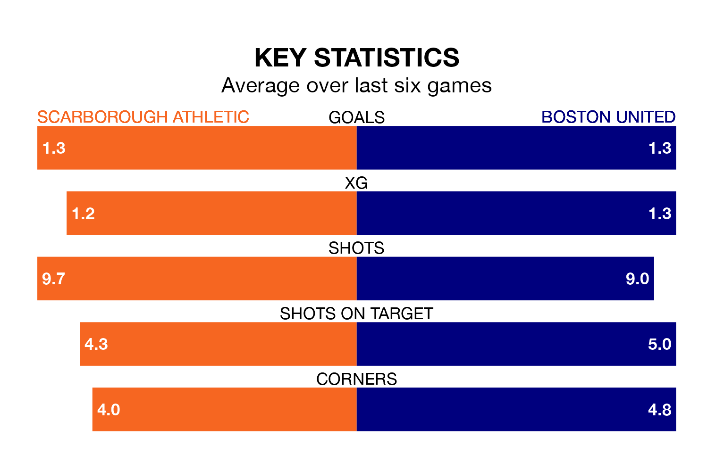

Boston United travel to Scarborough Athletic on late Tuesday in National League North.
The visitors come into the game on the back of a win in their last match, having beaten King's Lynn Town 2-1 away.
Scarborough, meanwhile, drew their last match, 1-1 against Spennymoor Town.
Scarborough are fourth in the table after 27 games, of which they have won 14 and drawn three, earning 45 points.
Boston are six places behind Athletic in 10th, with 11 wins and eight draws putting them on 41 points.
With 32 goals in 27 games so far this season, United are scoring at below the league average rate with 1.2 goals per game. But they are conceding fewer than average too, letting in 28 goals at a rate of 1.0 per game.
The home side, meanwhile, are above average scorers, with 1.4 goals per game, compared to a league average of 1.3. They have conceded 1.2 goals per game.
Scarborough are in mixed form in National League North, with three wins and a draw from their last six games.
With two wins and two draws over that period, the Pilgrims' form is slightly worse – they have taken eight points from 18, compared to Scarborough's 10.
Over the last two years, Scarborough and Boston have played each other twice. they drew both of them.
Their last meeting was on January 28, when they played out a 2-2 draw.
Updated: 14:53 (UTC), 16/01/24